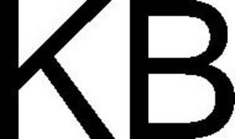

Trade Mark Journal No.2025/025 20 June 2025
WO0000001846639 (1,4,6,7,9,11,12,19,20,35,37,38,39,40,41,42,45)
Office of origin: Germany
Date of International Registration:12 December 2024
Date of designation in the UK:
12 December 2024

International priority date claimed: 12 November 2024
(Germany)
- Class 1
- Chemicals used in industry, namely liquids for protection from lime deposits, microbial growth and urine scale deposits, in particular for use in vacuum toilets; chemicals for the suppression of the odour of water; water treatment preparations; power steering fluid.
- Class 4
- Lubricants; electrical energy.
- Class 6
- Vats of metal; junctions of metal for pipes; metal hose fittings; structures of metal; ducts of metal, for central heating installations; buildings, transportable, of metal; valves of metal, other than parts of machines; common metals and their alloys; building materials of metal; metal containers for the storage and transportation of goods; non-electric cables and wires of common metal; small items of metal hardware; metal tracks for rail vehicles; railway points; swing doors of metal; metal ramps for use with vehicles.
- Class 7
- Compressors; pump installations; pumps [machines]; electrical pumps; pumps for the extraction of gases [machines]; pumps for the extraction of liquids [machines]; pumps for the extraction of vapour [machines]; pneumatic and hydraulic controls for motors; door systems, namely drive devices for opening and closing platform screen doors; pneumatic door openers and closers for vehicle doors, in particular automatically operated railway vehicle doors; electric door openers and closers for vehicle doors, in particular automatically operated railway vehicle doors; machines for use in the processing of water; filtering machines; sorting machines [for chemical processing]; chemical handling machines; vacuum control valves [parts of engines]; aerators; separators for separating solids from liquids; blowing machines; compressed air systems, namely compressed air machines, compressed air engines, compressed air generators for vehicles; compressed air supply systems, namely air compressors for vehicle compressed air systems, air intake systems and components for vehicles, air intake systems and components for motor and engines; valves [parts of machines]; fans for motors and engines; mechanical point machines for switching metal railway crossovers; machine coupling and transmission components (except for land vehicles); motors, other than for land vehicles; electric driving motors for machines; machine tools; agricultural, gardening and forestry machines and apparatus; agricultural implements being trailer mounted; lubrication machines; lubricators [parts of machines]; power-operated lubricant dispensers for machines; exhaust gas treatment systems for diesel engines; exhausts for motors and engines; skid steer loaders; robotic apparatus for handling materials; robotic arms for industrial purposes; robotic labelling machines; automated robotic handling apparatus for loading and unloading of goods; robotic compressors; industrial robot scotching machines; robotic mechanisms for lifting; robotic mechanisms being parts of loading-unloading machines and apparatus; indoor self-driving robots for industrial use; control mechanisms for robotic machines.
- Class 9
- Scientific, nautical, surveying, photographic, cinematographic, optical, weighing, measuring, signalling, checking [supervision], life-saving and teaching apparatus and instruments; physical, electric, electronic measuring, signalling, checking (supervision), control, regulating, and monitoring equipment and apparatus; mechanically and/or pneumatically and/or hydraulically and/or electromechanically and/or electromagnetically and/or electrically and/or electronically-operated, controlled and controlling measuring, signalling, checking (supervision), controlling, regulating, recording, amplifying and monitoring equipment and apparatus; apparatus for recording, transmission or reproduction of sound or images; apparatus and instruments for conducting, switching, transforming, accumulating, regulating or controlling electricity; electric apparatus for commutation; power relays; relays, electric; overload relays; electronic power controllers; electric control apparatus; approximation detectors; phase modifiers; electric cords; junction boxes [electricity]; steering apparatus, automatic, for vehicles; circuit breakers; resistances, electric; converters, electric; current transformers; current convertors; electricity measuring instruments; electric power supply units; voltage surge protectors; DC/AC converters; electronic control circuits for electric fans; electronic circuit boards; solenoid valves [electromagnetic switches]; measuring transducers; transformers [electricity]; electric car charging piles; electronic load modules; apparatus and instruments for transforming the distribution of electricity; electrical and electronic components; components for electric circuits; electronic control systems for doors and platform screen doors; safety, security, protection and signalling devices; signalling panels, luminous or mechanical; traffic-light apparatus [signalling devices]; electro-dynamic apparatus for the remote control of railway points; railway signals; railway traffic safety appliances; detection apparatus; light detection and ranging [LIDAR] apparatus for vehicles; switch points [electric]; sensors; sensor switches; sensor controllers; radar apparatus; navigation, guidance, tracking, targeting and map making devices; control devices for vehicle navigation apparatus; electronic navigational, tracking and positioning apparatus and instruments; Global Positioning System [GPS] apparatus; electronic temperature monitors, other than for medical use; wireless controllers to remotely monitor and control the function and status of other electrical, electronic, and mechanical devices or systems; computer systems for automated vehicle control; autonomous driving control systems for vehicles; cameras for vehicles; intelligent gateways for real-time data analysis; digital electronic controllers; transmitters of electronic signals; programmable logic controllers; electronic personal alarm devices; alarm monitoring systems; logic circuits; control circuits; digital signal processors; software programmable microprocessors; material testing instruments and machines; life saving apparatus and equipment; mechanical contact switches; switches, electric; on-board computers; high-frequency apparatus; telecommunications equipment; data processing apparatus; data communications apparatus; telematic apparatus; telematic terminal apparatus; computer hardware; computer peripheral devices; blank integrated circuit cards [blank smart cards]; processors [central processing units]; downloadable mobile applications for the transmission of data; mobile apps; software; software for electronic driving assistance systems; driver assistance systems for motor vehicles; on board electronic systems for providing driving assistance; computer programs, downloadable; computer programs, recorded; automatic vehicle speed control apparatus; adaptive cruise control software (ACC); smart vehicle steering software; smart hydraulic steering software; lane departure warning systems software; side wind compensation systems software; simulators and computer programs for the steering and control of vehicles; computers for autonomous-driving vehicles; autonomous driving control systems for vehicles; vehicle autonomous driving systems featuring interactive displays; artificial intelligence software for vehicles; big data management software; software for the integration of artificial intelligence and machine learning in the field of big data; machine learning software; machine learning software for analysis; artificial intelligence and machine learning software; machine learning software for surveillance; industrial automation controls; document automation software; industrial automation software; robotic process automation [RPA] software; image recognition software; gesture recognition software; biometric voice recognition systems; software for optical character recognition; optical character recognition apparatus; intelligent character recognition [ICR] software; computerized time clocks with fingerprint recognition; traffic sign recognition apparatus and instruments; traffic control apparatus [electronic]; instruments for monitoring traffic; decision-making software; risk detection software; traffic management software; logistics software; supply chain management software; software and electric sensors for heating, ventilating, air conditioning and air purification equipment; application software for robot; databases (electronic); data sets, recorded or downloadable; sensors for railway vehicle door systems; electronic control apparatus for electric and electro-pneumatic door openers and closers for vehicle doors, in particular for railway vehicle doors and for extendable and retractable boarding aids for railway vehicles, in particular ramps, sliding steps and folding steps; electronic control apparatus for pneumatic door openers and closers for vehicle doors, in particular for railway vehicle doors and for extendable and retractable boarding aids for railway vehicles, in particular ramps, sliding steps and folding steps; electronic access control devices for use with door systems for vehicles; electrical controls; electronic controls for motors; electronic controllers; electronic monitoring equipment, control equipment, programmes and software for the operation of vacuum toilets for trains; couplings, electric; heat regulating apparatus; switchgear [electric]; boiler control instruments; temperature indicators; thermostats; electric control devices for energy management; energy management software; apparatus for improving power efficiency; supercapacitors for energy storage; ultracapacitors for energy storage; robotic electrical control apparatus; user-programmable humanoid robots, not configured; parts and accessories for all of the aforementioned goods, as far as included in this class.
- Class 11
- Heating, ventilating, air-conditioning apparatus and lighting installations, air treatment apparatus; toilets [water-closets]; taps; sanitary installations; water supply installations; filter apparatus for water supply installations; regulating apparatus for water apparatus; level controlling valves for tanks; sinks; cisterns; level controlling valves in tanks; waste pipes for sanitary installations; separators for scrubbing air; water conditioning apparatus; water conditioning installations; vacuum toilets for trains and parts thereof, included in this class; air-conditioning apparatus; air-conditioning installations; air treatment equipment; air cleaning apparatus; heating installations; heat pumps; defrosters; heat exchangers, other than parts of machines; ventilating installations; air filtering installations; cooling installations; ventilating fans; fans [air-conditioning]; axial fans; ventilating fans for industrial use; parts and accessories for all the aforesaid goods, included in this class.
- Class 12
- Commercial and rail vehicles for long-distance and local transport as well as for passenger and freight transport; apparatus for locomotion by land; brakes, brake systems and their parts for vehicles; brake linings for land vehicles; brake linings for vehicles; brake blocks for vehicles; brake segments for vehicles; exhaust brakes; brake cylinders for land vehicles; compressed air tanks being parts of vehicles; compressed air tanks, namely pressure media containers being parts of vehicles; compressed air supply systems being parts of vehicles; compressed air systems being parts of vehicles for use in controlling brakes, clutches, and/or transmissions; compressed air systems for controlling brakes, clutches, and/or transmissions being parts of vehicles; pneumatic suspension systems in vehicles; levelling installations for level control, level setting and/or lift axle control, as vehicle parts for commercial and rail vehicles; steering units for land vehicles; gear boxes for land vehicles; pneumatic transmission control units for land vehicles; transmission components for land vehicles; clutch mechanisms for motor cars; machine couplings and transmission components for land vehicles; steering wheels for vehicles; steering linkages for vehicles; steering columns for vehicles; apparatus for locomotion by land, air or water, in particular manual, hydraulic or electric steering gears, tie rods and steering systems, swivel hub shafts and axle drives, differentials, wheel hubs, drive units (included in this class), axles for vehicles, gear housings for land vehicles, gear components for land vehicles; drive gears [land vehicle parts]; powertrains, including motors and engines; electric motors for motor cars; motors, electric, for land vehicles; vehicle wheels; axles and axle bearings for land vehicles; pedal systems, namely brake pedals for vehicles; shock absorbers being parts of vehicle suspension; dampers, torsional vibration dampers, each as vehicle parts; vehicle doors, in particular automatically operated railway vehicle doors, in particular exterior doors, interior doors, connecting doors, sliding doors, driver's cab doors, pivot sliding doors; boarding aids being parts of railway vehicles, in particular ramps, namely sliding steps, folding steps and gap bridging devices; trapping protection devices as parts of vehicle door systems; doors for vehicles and parts thereof; traction controls; railway couplings; bogies for railway wagons and rail-bound vehicles; sanding devices, as parts adapted to rail-bound vehicles; windscreen wiper and washer systems; robotic cars; parts and accessories for all of the aforementioned goods, as far as included in this class.
- Class 19
- Building materials, not of metal; non-luminous and non-mechanical signs, not of metal; railway sleepers, not of metal; swing doors, not of metal.
- Class 20
- Containers, not of metal; plastic valves; plastic ramps for use with vehicles.
- Class 35
- Business management; transportation fleet (business management of -) [for others]; vehicle fleet (business management of a -) [for others]; professional business consultancy; supply chain management services; business management of logistics for others; assistance and advice regarding business organization; appointment scheduling services [office functions]; appointment reminder services [office functions]; publicity services; electronic stock management services; computerised stock management; business management in the field of transport and delivery.
- Class 37
- Assembly, restoration, maintenance, overhauling and repair of vehicles; assembly, installation, restoration, maintenance, overhauling and repair of electric and electronic apparatus; maintenance and repair of motor vehicle engines; repair and overhaul of compressors, dampers, transmission components, brakes and their parts, control units, valves [machine parts], pedal systems, clutches, motor vehicle engines, heating, ventilating, air conditioning apparatus and air treatment apparatus for land vehicles; rebuilding machines that have been worn or partially destroyed; vehicle repair consultancy; advisory services relating to the maintenance and repair of mechanical and electrical equipment; construction services; repair of chemical processing machines and equipment; repair of pressurised containers; repair of storage tanks; repair of machines; repair of water supply apparatus; repair of water supply installations; repair of water purifying apparatus; repair of sanitary installations; installation of pipe systems for conducting of liquids; installation of water supply apparatus; installation of sanitary apparatus; installation of washroom apparatus; installation of data processing apparatus; installation of access control systems; maintenance of computer hardware; repair of computer hardware; installation of building automation equipment; installation, maintenance and repair of telecommunications equipment; maintenance of railway track; installation of traffic management systems; pump repair; installation of environmental protection systems; power infrastructure construction; construction of geothermal energy installations; installation of energy-saving apparatus; maintenance and repair of energy generating installations.
- Class 38
- Telecommunication services; providing telecommunications connections to databases; computerised communication services; electronic transmission of data; data transmission; transmission of information by computer; telematics services; telematic communication services; interactive broadcasting and communications services; providing access to platforms and portals on the internet; provision of access to data via the internet; communication (including via online transmission) of information and documents; consultancy in the field of telecommunications.
- Class 39
- Traffic information; transportation information; transport; storage and delivery of goods; advisory services relating to the storage of goods; storage information; warehousing of parts; delivery of goods; pickup and delivery of parcels and goods; tracking of passenger or freight vehicles by computer or via GPS; distribution of energy; distribution of energy for heating and cooling buildings; distribution of renewable energy; providing information relating to the distribution of electricity.
- Class 40
- Custom assembling of materials for others; vulcanization [material treatment]; metal treating; heat treatment of metals; metal plating and laminating; treating materials with ultrasonic waves to modify their properties; treatment of materials by laser beam; treatment of materials using chemicals; metal casting; custom construction of machines; material treatment information; water treatment and purification; treatment of waste materials in the field of environmental pollution control; energy production; production of renewable green energy; leasing of energy generating equipment.
- Class 41
- Provision of training courses; provision of online training; training; consultancy services relating to training; entertainment services; sporting and cultural activities.
- Class 42
- Scientific and technological services; scientific and industrial research; engineering research; technical design; engineering services; engineering services relating to information technology; computer programming; software as a service [SaaS] services featuring software for machine learning, deep learning and deep neural networks; design of office automation equipment; design of face recognition software; technological research relating to iris recognition; technological research relating to ultrasonic fingerprint recognition; creation of control programs for automated measurement, assembly, adjustment, and related visualization; development and testing of computing methods, algorithms and software; design and development of computer software for supply chain management; design and development of computer software for logistics, supply chain management and e-business portals; design and development of computer hardware; design of computer databases; creating electronically stored web pages for online services and the internet; software development; installation, maintenance and updating of computer software; computer diagnostic services; industrial testing; quality control testing; conducting engineering surveys; testing, analysis and evaluation of the goods and services of others for the purpose of certification; materials testing and analysing; advisory services relating to material testing; providing information in the field of product design; providing information in the field of product development; providing information about industrial analysis and research services; technological consultancy; engineering consultancy services; information technology support services; information technology [IT] consultancy; installation, maintenance and repair of software for heating, ventilation, air-conditioning and air purification equipment and installations, and parts of the aforesaid goods, in particular for railway, industrial, mining, defence vehicles; industrial analysis and research services; internet security consultancy; computer security consultancy; data security consultancy; computer software consultancy; consultation services relating to computer systems; consultation services relating to computer hardware; off-site data backup; engineering services in the field of environmental technology; technical consulting in the field of environmental engineering; environmental monitoring services; consultancy in the field of energy-saving; consultancy relating to technological services in the field of power and energy supply; computer programming for the energy industry; conducting research and technical project studies relating to the use of natural energy; energy auditing; development of energy and power management systems; design and development of energy management software; design and development of regenerative energy generation systems; engineering services in the field of energy technology; engineering services relating to energy supply systems; programming of energy management software.
- Class 45
- Intellectual property consultancy; consultancy relating to the management of intellectual property and copyright; consultancy relating to the licensing of intellectual property; consultancy relating to intellectual property management; conveyancing; investigations in relation to intellectual property; legal services relating to the management, control and granting of licence rights; legal services in relation to the negotiation of contracts for others; legal services relating to licences; licensing of intellectual property and copyright; licensing industrial property rights; legal assistance in the drawing up of contracts; legal advice and representation; industrial property watching services; copyright watch services; management of intellectual property; management of industrial property rights; providing information on industrial property rights; licensing of computer software [legal services].
Knorr-Bremse Aktiengesellschaft
Representative: Galion IP GmbH, Perlacher Straße 8, 82031 Grünwald, GERMANY